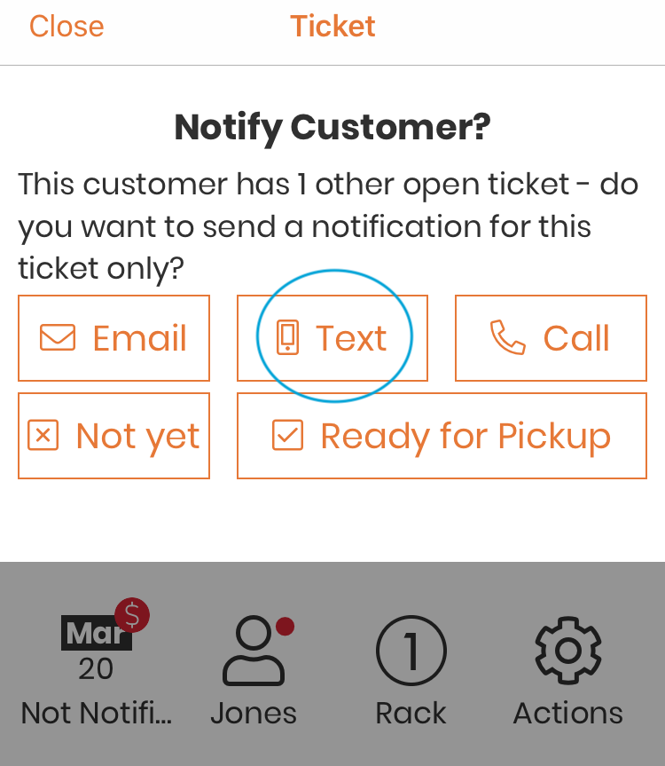
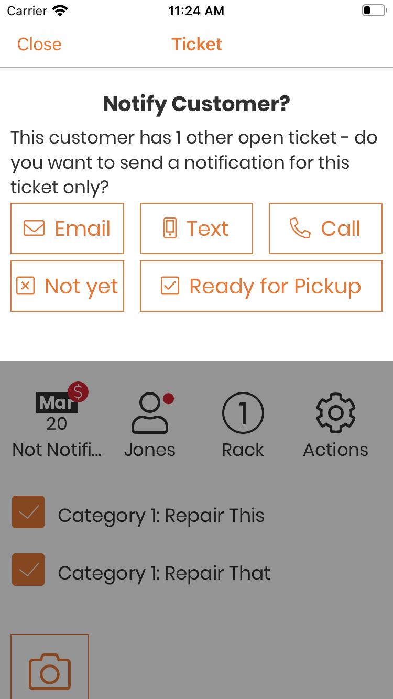
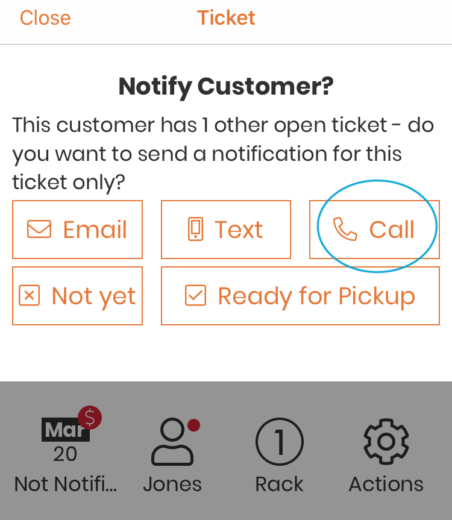
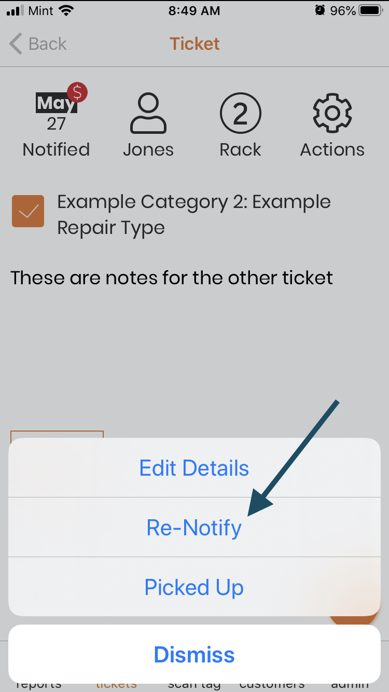

Step 4: Notifications¶
When all repairs are marked as complete for a ticket, or a tag is scanned for a ticket that is in the ‘Not Notified’ status, you will be given the option to notify the customer that their repair is complete.
Customer with Multiple Tickets
Text¶
If this customer has a mobile phone number, and texts are enabled (see Edit Customer for more details), you will be able to send a text notification.
Note
You will only be able to send text notifications from a mobile device with system texts. iPhones, iPads, or Android phones will all be able to send texts.
To send a text notification, tap on the ‘Text’ button.
{kind=link}
A text will be opened in your device’s texting application, prefilled with the customer’s phone number, and your text notification template.
Note
For more information on editing your notification templates, see Notification Templates.
Send the text, and you will be returned to the Repairtagger app. The ticket is now marked as ‘Notified’, and will be moved to the ‘Complete’ section of the ticket list. See Ticket List for more information.
Email¶
If this customer has an email address, (see Edit Customer for more details), you will be able to send an email notification.
To send an email notification, tap on the ‘Email’ button.
{kind=link}
An email will be opened in your device’s default email application, prefilled with the customer’s email address, and your email notification template.
Note
For more information on editing your notification templates, see Notification Templates.
Send the email, and you will be returned to the Repairtagger app. The ticket is now marked as ‘Notified’, and will be moved to the ‘Complete’ section of the ticket list. See Ticket List for more information.
Phone call¶
If this customer has a mobile or landline phone number (see Edit Customer for more details), you will be able to call them.
Note
You will only be able to make phone calls from a mobile device that is capable of making phone calls.
To make a phone call, tap on the ‘Call’ button.
{kind=link}
You will be shown a list of available phone numbers for that customer. Tap on the phone number you wish to call, and make your phone call. When you are finished, you will be returned to the Repairtagger app, the ticket will be marked as ‘Notified’ and moved to the ‘Complete’ section of the ticket list. See Ticket List for more information.
Customer with Multiple Tickets¶
If the customer has more than one ticket, you will have a few notification options, depending on the status of their other open tickets.
Customer has multiple open tickets (Includes tickets with incomplete repairs)¶
- Not yet - Tap this button if the customer wishes to pick up all of their items at one time.
- Ready for Pickup - Tap this button if you have already notified the customer that the item is complete and ready for pickup.
- Email/Text/Call - Tap on one of the notification buttons if you wish to notify the customer that their repair is complete and ready for pickup, for the current ticket only. When you have finished sending a text or email, or making your phone call, the current ticket will be marked as ‘Notified’ and moved to the ‘Complete’ section of the ticket list.
See Ticket List for more information.
Customer has multiple open tickets (All repair work is complete)¶
- Not yet - Tap this button if you are done with all of their tickets, but are not ready to notify them.
- Ready for Pickup - Tap this button if you have already notified the customer that their items are ready for pickup.
- Email/Text/Call - Tap on one of the notification buttons if you wish to notify the customer that all of their repairs are complete and ready for pickup. When you have finished sending a text or email, or making your phone call, all of the open tickets will be marked as ‘Notified’ and moved to the ‘Complete’ section of the ticket list.
See Ticket List for more information.
Re-Notify a Customer¶
If you have an item that’s been waiting to be picked up for a while, sometimes you want to remind the customer! To do this, just open the actions menu while viewing the ticket, and tap on ‘Re-notify’
{kind=link}
You will be shown the notification options again, they will work exactly the same as when you are first notifying a customer.